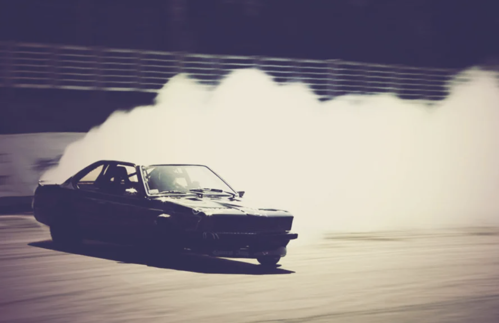

Дрифт в Японии
Само понятие и, в частности, техника дрифта появилась в Японии в начале 1980-х годов. История же дрифта началась в конце 70-х годов в виде раллийных гонок, тогда они были очень популярны, а именно чемпионат мира по ралли (World Rally Championship, WRC).
С 1973 года Японцы начали участвовать в чемпионате мира на машинах Toyota, Mitsubishi и Datsun. А уже в 1980 году появилась первая команда пилот автогонщиков из Японии во главе с Иошио Ивашита и Канджиро Шинозука, которые активно начали тестировать в раллийных гонках машины фирм Mazda, Subaru и Nissan.
Призовых мест на чемпионате команда Японии не занимала. К примеру, на чемпионате мира по ралли среди производителей 1980 года у команды был 7 и 15 места в итоговой таблице. А в чемпионате мира среди пилотов японец Йошио Ивашита занял только 42 место.
Как правило, Японские раллийные машины технически были хорошо подготовлены, а автогонщики Канджиро Шинозука, Йошио Ивашита, Ёсинобу Такахаси, Йасухиро Иуасе и Йаширо Ивасе умело управляли машинами и гоняли по пересеченной местности, входили на скорости в крутые повороты и умело скользили – дрифтовали.
Тот самый дрифт
Группа молодых энтузиастов взяла за основу скольжение на World Rally Championship и частично применила эту технику на горном серпантине Ирохадзака в виде дрифтинга.
Так в Японии зародилась дрифт культура и появились водители тогэ (touge), в дальнейшем возникли такие группы как «Тогэ рэйсинг» (touge racing) и «Каньен рэйсинг» (Сanyon racing).
К сожалению, новое дрифт движение в Японии вызвало рост несчастных случаев. Бывало, что начинающие дрифтеры touge racing получали травмы (из-за аварий) и погибали из-за того, что новоиспеченная раллийная техника дрифта не была идеальна на крутых поворотах Японских гор.Тем же, кому удавалось пройти дистанцию с подъемами в гору и скоростными спусками, оставалось только повторить и закрепить вхождение в поворот и уменьшить время прохождения трассы. Спустя время команда «тогэ» каждый уикенд стала устраивать простые «покатушки» с заносами машины, а после — соревнования по дрифту.
Дрифт это
Самых увлеченных называли «роллинг зоку»: они-то и состязались на тогэ. Изначально занос не был обязательной частью тоге, но, в основном из видеозаписей ралли, гонщики поняли, что на узкой и извилистой дороге проходить повороты в управляемом скольжении быстрее всего. Гонки тоге делятся на две части: uphill и downhill. На таких узких трассах обгон почти не возможен, поэтому гонки представляют собой преследование, цель лидера — к финишу увеличить первоначальное расстояние между машинами, а преследователя — уменьшить его.
В местах, где ширина дороги позволяет выстроить на старте в ряд 2 машины, гонки проходят по классическим правилам. Усложненной версией тоге является «гонка со скотчем», где одна рука водителя привязана к рулю.
Часть Роллинг зоку стали применять технические приемы вождения раллистов, приемы прохождения поворотов быстро и без потери инерции. С использованием раллийной техники прохождения поворотов водители на тога начали замечать, что уровень владения машиной и время прохождения улучшились, при этом гонка стала напряженней.
Мировой дрифт
Популяризация дрифта как ни странно началась в США, а точнее с Южной Калифорнии. Именно здесь автомобильные энтузиасты перелистали (перечитали) сотни автомобильных журналов (в том числе и редкие японские выпуски), в которых были представлены модифицированные дрифт машины, выглядевшие не так, как в США
Пока американские дрэг рейсеры в 80-х выжимали по максимуму из своих 300-сильных машин в спринторском заезде на дистанции 402 метра или (¼ мили), небольшое число энтузиастов из Америки увлекались «подземным» видом спорта, который привезли из Японии под названием Сanyon racing и Drifting.
Через некоторое время Американцы смекнули, что на этом движении можно очень хорошо заработать, и начали активно продвигать маркетинговую компанию American Drift, где рассказывали как заработать на этой культуре (на привезенных японских машинах, колесах, подвесках и т.п.) американцам. В дальнейшем эта дрифт культура ушла в Европу.
Сегодня дрифтинг стал очень популярным среди молодежи Европы и США. Сейчас это большая и развивающаяся культура, где профессиональные автогонщики — дрифтеры соревнуются на ежегодных мероприятиях, проводимых в различных странах, например, Гран-при D1.
Формирование дрифта как профессионального спорта
Уличные гонщики стали активно перенимать технику управления автомобилем в заносе, перенося ее на реалии загородных трасс. Скольжение стало неотъемлемой частью гонок, придав им еще большую зрелищность и сложность. И одним из тех, на кого стиль Кунимицу Такахаси оказал решающее влияние, стал будущий "король дрифта" Кэйити Цутия. Он буквально вдохнул жизнь в то, что поначалу было нелегальными уличными гонками, дав начало официальным соревнованиям по дрифту.Будучи талантливым гонщиком, Цутия построил прекрасную карьеру профессионального спортсмена, начавшуюся с Fuji Freshman series (Чемпионат новичков Фудзи) и переросшую в японскую Формулу-3, японский туринговый чемпионат, NASCAR и даже Ле Ман. Однако его главной любовью были именно дрифт-соревнования, которые даже стали причиной лишения его профессиональной гоночной лицензии на заре его карьеры.

Снятый в 1987 году фильм Pluspy с его участием вкупе с нежеланием оставлять любимое дело жизни привели к отстранению его от официальных соревнований, к счастью, недолгому. Несмотря на все это, Цутия не оставил стремлений к популяризации и продвижению этого вида гонок, а также призывал своих единомышленников "выйти из подполья" и легализовать их.
Итогом стараний Кэйити Цутия и совместной работы с Даидзиро Инада, основателем автомобильного журнала Option и Токийского Автосалона, стало создание в 1999-2000 годах профессиональной серии D-1 Grand Prix, которая сегодня является крупнейшей ассоциацией дрифта в мире.